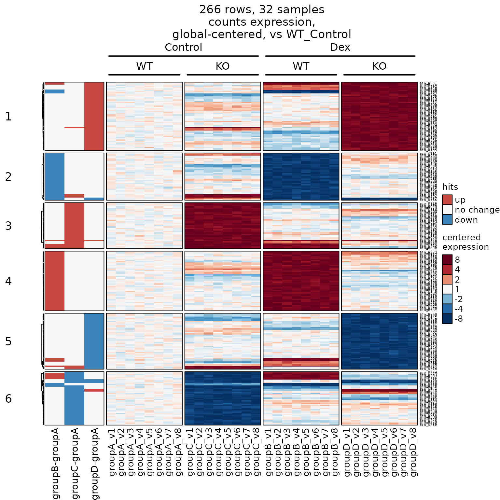
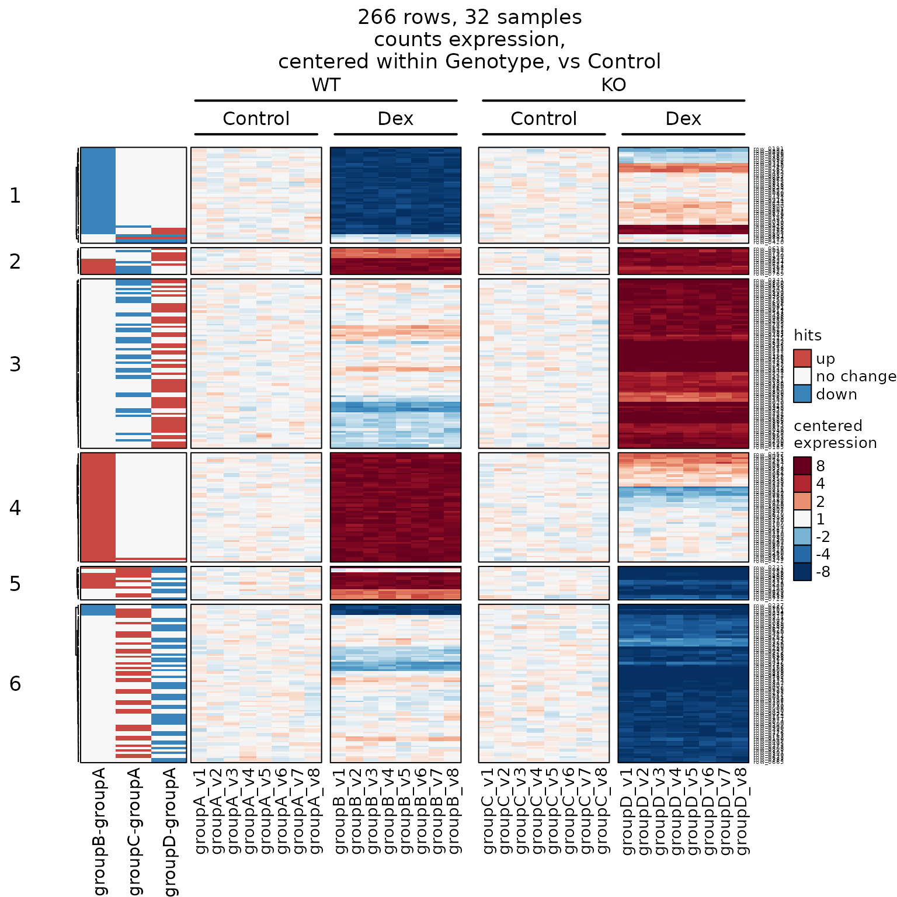

Load R packages:
library(jamses)
library(SummarizedExperiment)
#> Loading required package: MatrixGenerics
#> Loading required package: matrixStats
#>
#> Attaching package: 'MatrixGenerics'
#> The following objects are masked from 'package:matrixStats':
#>
#> colAlls, colAnyNAs, colAnys, colAvgsPerRowSet, colCollapse,
#> colCounts, colCummaxs, colCummins, colCumprods, colCumsums,
#> colDiffs, colIQRDiffs, colIQRs, colLogSumExps, colMadDiffs,
#> colMads, colMaxs, colMeans2, colMedians, colMins, colOrderStats,
#> colProds, colQuantiles, colRanges, colRanks, colSdDiffs, colSds,
#> colSums2, colTabulates, colVarDiffs, colVars, colWeightedMads,
#> colWeightedMeans, colWeightedMedians, colWeightedSds,
#> colWeightedVars, rowAlls, rowAnyNAs, rowAnys, rowAvgsPerColSet,
#> rowCollapse, rowCounts, rowCummaxs, rowCummins, rowCumprods,
#> rowCumsums, rowDiffs, rowIQRDiffs, rowIQRs, rowLogSumExps,
#> rowMadDiffs, rowMads, rowMaxs, rowMeans2, rowMedians, rowMins,
#> rowOrderStats, rowProds, rowQuantiles, rowRanges, rowRanks,
#> rowSdDiffs, rowSds, rowSums2, rowTabulates, rowVarDiffs, rowVars,
#> rowWeightedMads, rowWeightedMeans, rowWeightedMedians,
#> rowWeightedSds, rowWeightedVars
#> Loading required package: GenomicRanges
#> Loading required package: stats4
#> Loading required package: BiocGenerics
#> Loading required package: generics
#>
#> Attaching package: 'generics'
#> The following objects are masked from 'package:base':
#>
#> as.difftime, as.factor, as.ordered, intersect, is.element, setdiff,
#> setequal, union
#>
#> Attaching package: 'BiocGenerics'
#> The following objects are masked from 'package:stats':
#>
#> IQR, mad, sd, var, xtabs
#> The following objects are masked from 'package:base':
#>
#> anyDuplicated, aperm, append, as.data.frame, basename, cbind,
#> colnames, dirname, do.call, duplicated, eval, evalq, Filter, Find,
#> get, grep, grepl, is.unsorted, lapply, Map, mapply, match, mget,
#> order, paste, pmax, pmax.int, pmin, pmin.int, Position, rank,
#> rbind, Reduce, rownames, sapply, saveRDS, table, tapply, unique,
#> unsplit, which.max, which.min
#> Loading required package: S4Vectors
#>
#> Attaching package: 'S4Vectors'
#> The following object is masked from 'package:utils':
#>
#> findMatches
#> The following objects are masked from 'package:base':
#>
#> expand.grid, I, unname
#> Loading required package: IRanges
#> Loading required package: Seqinfo
#> Loading required package: Biobase
#> Welcome to Bioconductor
#>
#> Vignettes contain introductory material; view with
#> 'browseVignettes()'. To cite Bioconductor, see
#> 'citation("Biobase")', and for packages 'citation("pkgname")'.
#>
#> Attaching package: 'Biobase'
#> The following object is masked from 'package:MatrixGenerics':
#>
#> rowMedians
#> The following objects are masked from 'package:matrixStats':
#>
#> anyMissing, rowMedians
#> The following object is masked from 'package:jamses':
#>
#> samples
library(ComplexHeatmap)
#> Loading required package: grid
#> ========================================
#> ComplexHeatmap version 2.25.3
#> Bioconductor page: http://bioconductor.org/packages/ComplexHeatmap/
#> Github page: https://github.com/jokergoo/ComplexHeatmap
#> Documentation: http://jokergoo.github.io/ComplexHeatmap-reference
#>
#> If you use it in published research, please cite either one:
#> - Gu, Z. Complex Heatmap Visualization. iMeta 2022.
#> - Gu, Z. Complex heatmaps reveal patterns and correlations in multidimensional
#> genomic data. Bioinformatics 2016.
#>
#>
#> The new InteractiveComplexHeatmap package can directly export static
#> complex heatmaps into an interactive Shiny app with zero effort. Have a try!
#>
#> This message can be suppressed by:
#> suppressPackageStartupMessages(library(ComplexHeatmap))
#> ========================================Make the heatmap:
heatmap_se(se)The defaults are very good.
The custom options are great.
Why SummarizedExperiment?
SummarizedExperiment is an enhanced data
matrix
- It stores multiple data matrices. Some examples:
- Raw
- normalized
- batch-adjusted
- VST-normalized
- “counts” (or pseudocounts)
- “abundance” (or TPM, FPKM)
- Columns have annotations in
colData(). - Rows have annotations in
rowData(). - Annotations are used in
heatmap_se():- display annotations beside the heatmap
- split the heatmap by groups
- center the data in meaningful ways
- You can create a
SummarizedExperimentfrom any of:-
numericmatrix ExpressionSetDGEListDESeqDataset
-
See the SummarizedExperiment vignette for more detail.
Heatmap Principles
The heatmap_se() is opinionated.
- The default should be very close to ideal.
- There are many custom options.
We build upon ComplexHeatmap::Heatmap().
- It is amazing. And complex. We know this.
- You can combine heatmaps:
- Add them
+to display side-by-side. - Use
%v%to display top-to-bottom.
- Add them
Data are assumed to be log2-transformed.
- We recommend
log2(1 + x), ymmv. - log2-transformed values are consistent with many
’Omics tools which report log2 fold change.
Data are not scaled. (Gasp)
- We believe magnitude of change is important in Omics data.
It is helpful for critical review of the data,
which is the main purpose of a heatmap.
(A heatmap is not itself a decision-making tool,
however it very much helps assess the assumptions
and results obtained from other tools.) - Row-scaling adjusts the signal based upon the
variability on each row.
It is particularly effective when the range of
response is different for each row of data,
and where the range of response is more closely
associated with technical limitations than with
biological response.
In our experience, most ’Omics platforms are not dominated by this limitation. - Row-scaling has the nice benefit that it does not
require log2-transformed data.
It “naturally” transforms data into z-score units.
These units may or may not be biologically meaningful. - The z-score units are particularly useful when you
only want to show presence/absence, or high/low
relative to the range of signal on each row. - We aim to achieve many of the same goals without
scaling, because we find the actual magnitudes useful.
Data are row-centered.
- The average signal of each row is subtracted from
that row, resulting “difference from average”. - We assume log2-transformed data, therefore values are
called “log2 differences”. - These log2 differences are commonly shown in volcano plots,
and in MA-plots. - The “log2 differences” can be converted to fold changes,
so we use fold change to label the color key. - We recommend using the heatmap to display data as
similar as possible to the underlying statistical tests,
consistent with other supporting figures.
Always use a divergent color scale with centered data.
- (The same rule applies to z-scores, and correlations.)
- The color scale uses Brewer colors
'RdBu'in reverse:
blue-white-red
and white is always at zero. - Red is Up because this is a HEAT map.
- Blue is Down because it is cold.
- If Blue were
up, you should call it a COLD
map.
A cold map can be useful, but it is not a heat map.
The color scale uses a fixed range.
- Default range:
-8 to +8 fold. - It defines a consistent color-to-magnitude relationship.
Two-fold should look like a two-fold change. - This range represents biologically relevant changes for
most Omics data. (It can be adjusted.) - Extremely high values do not adjust the range,
otherwise it would compress the colors of everything else. - When the data have small changes, the heatmap will show
them as small changes. - The range may be adjusted when needed.
Data centering is flexible, and encouraged:
- By default, centering uses all samples.
“Global centering” - Centering can be “versus controls”.
- Centering can be within sub-groups,
'centerby groups'.
Examples of'centerby groups':- design factor(s),
- sample type,
- tissue type,
- cell line,
- processing batch,
- pairing factor,
- Each
'centerby group'can have its own controls. - For example, you may center within each cell line,
then center each sample to its respective control group.
Annotations are “easy”:
Statistical hits are “easy”:
- Provide
sestatsto add statistical hits to the left side. - Hits are colored by direction (Up/Down).
- The heatmap will subset to show only these hits.
Rows and columns can be grouped:
-
row_splitdefines row groups -
column_splitdefines column groups - use an
integernumber of groups, or annotationcolnames().
Heatmap Walkthrough
Each step in the walkthrough adds some detail. * Sometimes we
demonstrate other custom options as well,
just to give a flavor for the variety of styles available.
Basic Heatmap
Provide se (SummarizedExperiment data) and it will
create the default heatmap. * top_colnames are
auto-detected by default.
hm <- heatmap_se(se)
#> 'magick' package is suggested to install to give better rasterization.
#>
#> Set `ht_opt$message = FALSE` to turn off this message.
# draw by printing hm, or call draw() to add useful options
draw(hm)
Custom Annotation Colors
- Use
sample_color_listto provide custom colors.- Provide a
listnamed by the annotation column.
- Or use
colorjam::group2colors()to define categorical colors.
- Provide a
-
rowData_colnamesadded row annotations to the left. -
left_annotation_name_rot=150rotated the annotation label.
sample_color_list <- list(
group=c(
groupA="gold",
groupB="darkorange2",
groupC="firebrick3",
groupD="darkorchid4"
),
Class=colorjam::group2colors(
unique(rowData(se)$Class)))
heatmap_se(se,
rowData_colnames="Class",
left_annotation_name_rot=150,
sample_color_list=sample_color_list)
#> 'magick' package is suggested to install to give better rasterization.
#>
#> Set `ht_opt$message = FALSE` to turn off this message.
Heatmap Legend Options
-
ComplexHeatmap::ht_opt()allows some stylistic options
to be default whenever you draw a heatmap.- A common option is:
merge_legends=TRUEwhich
combines all color legends into one column.
- A common option is:
-
show_left_annotation_name="top"places the annotation
label at the top instead of the bottom. - Notice you can draw the heatmap directly:
heatmap_se()
ComplexHeatmap::ht_opt(merge_legends=TRUE)
heatmap_se(se,
rowData_colnames="Class",
show_left_annotation_name="top",
left_annotation_name_rot=150,
sample_color_list=sample_color_list)
#> 'magick' package is suggested to install to give better rasterization.
#>
#> Set `ht_opt$message = FALSE` to turn off this message.
Split Rows by Annotation
-
row_split="Class"will group rows by “Class”.
hm <- heatmap_se(se,
rowData_colnames="Class",
row_split="Class",
sample_color_list=sample_color_list)
#> 'magick' package is suggested to install to give better rasterization.
#>
#> Set `ht_opt$message = FALSE` to turn off this message.
draw(hm)
Split Rows and Columns
-
column_split="group"splits the columns. -
row_split="Class"splits the rows. - You can provide multiple columns if needed.
hm <- heatmap_se(se,
column_split="group",
row_split="Class",
rowData_colnames="Class",
sample_color_list=sample_color_list)
#> 'magick' package is suggested to install to give better rasterization.
#>
#> Set `ht_opt$message = FALSE` to turn off this message.
hm2 <- draw(hm)
Get the Row Group Order
- Now seems like a good time to get the row order:
jamba::heatmap_row_order(hm)- It returns a
listseparated by row group.
- It works best with the
hm2drawn heatmap, since
some clustering methods use a random element.
hro <- jamba::heatmap_row_order(hm2);
lengths(hro)
#> A B C D E
#> 196 210 199 215 180See the first five entries per row group:
lapply(hro, head, 5)
#> $A
#> row_0640 row_0405 row_0417 row_0730 row_0847
#> "row_0640" "row_0405" "row_0417" "row_0730" "row_0847"
#>
#> $B
#> row_0087 row_0075 row_0421 row_0624 row_0238
#> "row_0087" "row_0075" "row_0421" "row_0624" "row_0238"
#>
#> $C
#> row_0834 row_0593 row_0670 row_0823 row_0066
#> "row_0834" "row_0593" "row_0670" "row_0823" "row_0066"
#>
#> $D
#> row_0349 row_0755 row_0633 row_0784 row_0208
#> "row_0349" "row_0755" "row_0633" "row_0784" "row_0208"
#>
#> $E
#> row_0948 row_0115 row_0874 row_0165 row_0227
#> "row_0948" "row_0115" "row_0874" "row_0165" "row_0227"Center Using a Control Group
-
controlSamplesdefines a subset of samples
to be the reference for data centering.- Here we use samples in
"groupA". -
control_label="vs GroupA"describes the control
- Here we use samples in
-
column_title_rot=90also rotates the column group
title 90 degrees. - We define a new attribute
'hm_title'as a
convenient heatmap title.-
column_titleadds the title when wedraw()
the heatmap.
-
# center by groupA samples
use_controlSamples <- rownames(
subset(colData(se), group %in% "groupA"))
# - control_label
hm3 <- heatmap_se(se,
controlSamples=use_controlSamples,
control_label="vs groupA",
column_split="group",
column_title_rot=90,
row_split="Class",
rowData_colnames="Class",
cluster_row_slices=FALSE,
sample_color_list=sample_color_list)
#> 'magick' package is suggested to install to give better rasterization.
#>
#> Set `ht_opt$message = FALSE` to turn off this message.
hm4 <- ComplexHeatmap::draw(hm3,
column_title=attr(hm3, "hm_title"))
Add Callout Labels for Some Rows
-
mark_rowsadds labels to the right- Great for labeling genes of interest, especially
when there are too many rows in the heatmap. - We add 5 labels from ‘A’, and 3 labels from ‘D’.
- Great for labeling genes of interest, especially
- In RStudio, you may want to silence some warnings:
ComplexHeatmap::ht_opt(message=FALSE)
# add "callout" labels for a subset of rows
hro <- jamba::heatmap_row_order(hm4);
mark_rows <- c(
sample(hro[["A"]], size=5),
sample(hro[["D"]], size=3));
hm5 <- heatmap_se(se,
mark_rows=mark_rows,
controlSamples=use_controlSamples,
control_label="vs groupA",
column_split="group",
column_title_rot=90,
row_split="Class",
rowData_colnames="Class",
sample_color_list=sample_color_list)
#> 'magick' package is suggested to install to give better rasterization.
#>
#> Set `ht_opt$message = FALSE` to turn off this message.
ComplexHeatmap::draw(hm5,
column_title=attr(hm5, "hm_title"))
Display Statistical Hits
-
sestatsenables statistical hits on the left side. - It can be a
listnamed by contrast, each with:- a
numericvector named bygenerownames. - values should be
-1down, or+1up. - Any non-zero value is considered a ‘hit’.
- a
- It can be an incidence matrix.
-
rownamesshould match some heatmaprownames. -
colnamesshould be contrast names - values are
numeric, where-1is down,+1is up.
-
- It can be
SEStatsfromse_contrast_stats().- This step is outside the scope, but is convenient!
- See Run Limma Statistics for an example.
We create a list of hit vectors:
# define a random set of hits
sestats_list <- list(
contrast1=setNames(
sample(c(1, -1), replace=TRUE, size=50),
sample(rownames(se), size=50)
),
contrast2=setNames(
sample(c(1, -1), replace=TRUE, size=50),
sample(rownames(se), size=50)
)
)- Now create the heatmap with
sestats:
hm6 <- heatmap_se(se,
controlSamples=use_controlSamples,
control_label="vs groupA",
sestats=sestats_list,
column_split="group",
row_split="Class",
rowData_colnames="Class",
sample_color_list=sample_color_list)
#> 'magick' package is suggested to install to give better rasterization.
#>
#> Set `ht_opt$message = FALSE` to turn off this message.
ComplexHeatmap::draw(hm6,
column_title=attr(hm6, "hm_title"))
Run Limma Statistics
-
se_contrast_stats()automateslimmafor multiple contrasts.- It applies
lmFit(),fitContrasts(),topTable(),
evenvoom()orDEqMSas appropriate. - It analyzes each contrast and assay.
- It returns
SEStats, used directly in the heatmap
- It applies
# SEDesign
sedesign <- groups_to_sedesign(
colData(se)[, "group", drop=FALSE])
# use only "versus groupA"
contrast_names(sedesign) <- jamba::vigrep("-groupA", contrast_names(sedesign))
# run stats
sestats <- se_contrast_stats(
se=se,
fold_cutoff=4,
sedesign=sedesign,
assay_name="counts")- Use
SEStatswithheatmap_se():
hm6s <- heatmap_se(se,
controlSamples=use_controlSamples,
control_label="vs groupA",
sestats=sestats,
column_split="group",
row_split=6,
rowData_colnames="Class",
sample_color_list=sample_color_list)
#> 'magick' package is suggested to install to give better rasterization.
#>
#> Set `ht_opt$message = FALSE` to turn off this message.
ComplexHeatmap::draw(hm6s,
column_title=attr(hm6s, "hm_title"))
Drill Down by Row Cluster
-
row_subcluster="4"makes it easy to answer
“What is going on with Cluster 4?”
# for fun, "drill down" into cluster 5
hm6s_4 <- heatmap_se(se,
controlSamples=use_controlSamples,
control_label="vs groupA",
sestats=sestats,
column_split="group",
row_split=6,
row_subcluster=4,
rowData_colnames="Class",
sample_color_list=sample_color_list)
#> 'magick' package is suggested to install to give better rasterization.
#>
#> Set `ht_opt$message = FALSE` to turn off this message.
#> Warning: The heatmap has not been initialized. You might have different results
#> if you repeatedly execute this function, e.g. when row_km/column_km was
#> set. It is more suggested to do as `ht = draw(ht); row_order(ht)`.
#> 'magick' package is suggested to install to give better rasterization.
#>
#> Set `ht_opt$message = FALSE` to turn off this message.
ComplexHeatmap::draw(hm6s_4,
column_title=attr(hm6s_4, "hm_title"))
sestats with an Incidence Matrix
- What is an incidence matrix, you say?
- We demonstrate what it looks like.
- Rows should match
rownames(se) - Columns are named by statistical contrasts.
# convert sestats to list, then incidence matrix
sestats_hitlist <- hit_array_to_list(sestats)
sestats_hitim <- venndir::list2im_value(sestats_hitlist[1:2])
print(head(sestats_hitim));
#> groupB-groupA groupC-groupA
#> row_0022 -1 -1
#> row_0030 -1 0
#> row_0066 1 0
#> row_0075 1 0
#> row_0080 -1 0
#> row_0087 1 0- Now
sestats_hitimdefines statistical hits.
hm7 <- heatmap_se(se,
controlSamples=use_controlSamples,
control_label="vs groupA",
sestats=sestats_hitim,
column_split="group",
rowData_colnames="Class",
sample_color_list=sample_color_list)
#> 'magick' package is suggested to install to give better rasterization.
#>
#> Set `ht_opt$message = FALSE` to turn off this message.
ComplexHeatmap::draw(hm7,
column_title=attr(hm7, "hm_title"))
Customize Column Labels
- Many labels can be customized: size, color, fontface
- This example shows how to change the color.
# customize column label fonts using column_names_gp
column_bold <- ifelse(
SummarizedExperiment::colData(se)$group %in% "groupA",
2, 1);
column_colors <- sample_color_list$group[
as.character(SummarizedExperiment::colData(se)$group)
]
hm8 <- heatmap_se(se,
controlSamples=use_controlSamples,
control_label="vs groupA",
column_names_gp=grid::gpar(
col=column_colors,
font=column_bold
),
column_split="group",
row_split="Class",
rowData_colnames="Class",
sample_color_list=sample_color_list)
#> 'magick' package is suggested to install to give better rasterization.
#>
#> Set `ht_opt$message = FALSE` to turn off this message.
ComplexHeatmap::draw(hm8,
column_title=attr(hm8, "hm_title"))
Create a Correlation Heatmap
- Just add
correlation=TRUE.- Any heatmap becomes a correlation heatmap,
using the same centered data as displayed
in the normal heatmap. - Centered data are used with
cor(), which is
the recommended way to calculate correlation values.
- It answers “What correlates using difference-from-average?”
- Any heatmap becomes a correlation heatmap,
-
cluster_columns=TRUEenables column clustering. - Remove
column_splitto allow unsupervised clustering.
# correlation=TRUE, any heatmap becomes a sample correlation heatmap
hm8corr <- heatmap_se(se,
correlation=TRUE,
apply_hm_column_title=TRUE,
controlSamples=use_controlSamples,
control_label="vs groupA",
column_names_gp=grid::gpar(
col=column_colors,
font=column_bold),
cluster_columns=TRUE,
sample_color_list=sample_color_list)
#> 'magick' package is suggested to install to give better rasterization.
#>
#> Set `ht_opt$message = FALSE` to turn off this message.
ComplexHeatmap::draw(hm8corr)
Add Grouped Column Labels
- Several features are enabled:
-
apply_hm_column_title=TRUEdisplays the heatmap title. -
top_colnames=FALSEhides the top annotation. -
heatmap_column_group_labels()adds grouped labels. -
hm_title_bufferadds whitespace for the grouped lines.
-
- We add two design factors:
Genotype,Treatment
SummarizedExperiment::colData(se)$Genotype <- rep(
factor(c("WT", "KO"), levels=c("WT", "KO")),
each=16);
SummarizedExperiment::colData(se)$Treatment <- rep(
c("Control", "Dex"), each=8);
hm9 <- heatmap_se(se,
apply_hm_column_title=TRUE,
hm_title_buffer=3,
controlSamples=use_controlSamples,
control_label="vs WT_Control",
sestats=sestats,
top_colnames=FALSE,
column_split=c("Genotype", "Treatment"),
row_split=6,
sample_color_list=sample_color_list)
#> 'magick' package is suggested to install to give better rasterization.
#>
#> Set `ht_opt$message = FALSE` to turn off this message.
hm9_drawn <- ComplexHeatmap::draw(hm9,
merge_legends=TRUE)
# now add fancy labels
heatmap_column_group_labels(
hm_group_list=c("Treatment", "Genotype"),
font_cex=1.2,
se=se,
hm_drawn=hm9_drawn)
-
y_offset_lineswill adjust the height of labels. - This step may not work consistently in RStudio.
- Call
dev.new()then re-run the steps.
- Call
Change Column Group Order
hm10 <- heatmap_se(se,
apply_hm_column_title=TRUE,
hm_title_buffer=3,
controlSamples=use_controlSamples,
control_label="vs WT_Control",
sestats=sestats,
top_colnames=FALSE,
column_split=c("Treatment", "Genotype"),
row_split=6,
sample_color_list=sample_color_list)
#> 'magick' package is suggested to install to give better rasterization.
#>
#> Set `ht_opt$message = FALSE` to turn off this message.
hm10_drawn <- ComplexHeatmap::draw(hm10,
merge_legends=TRUE)
# now add fancy labels
heatmap_column_group_labels(
hm_group_list=c("Genotype", "Treatment"),
font_cex=1.2,
se=se,
hm_drawn=hm10_drawn)
Center By Genotype
-
centerby_colnames="Genotype"centers within WT or KO -
use_controlSamples_Treatuses ‘Control’ samples
in both WT and KO.- It shows “Dex - Control” in each Genotype.
-
column_gapadds a custom gap between column groups.
use_controlSamples_Treat <- rownames(
subset(colData(se), Treatment %in% "Control"))
hm11 <- heatmap_se(se,
apply_hm_column_title=TRUE,
hm_title_buffer=3,
controlSamples=use_controlSamples_Treat,
control_label="vs Control",
sestats=sestats,
top_colnames=FALSE,
centerby_colnames="Genotype",
column_split=c("Genotype", "Treatment"),
row_split=6,
column_gap=grid::unit(c(2, 4, 2), "mm"),
sample_color_list=sample_color_list)
#> 'magick' package is suggested to install to give better rasterization.
#>
#> Set `ht_opt$message = FALSE` to turn off this message.
hm11_drawn <- ComplexHeatmap::draw(hm11,
merge_legends=TRUE)
# now add fancy labels
heatmap_column_group_labels(
hm_group_list=c("Treatment", "Genotype"),
font_cex=1.2,
se=se,
hm_drawn=hm11_drawn)